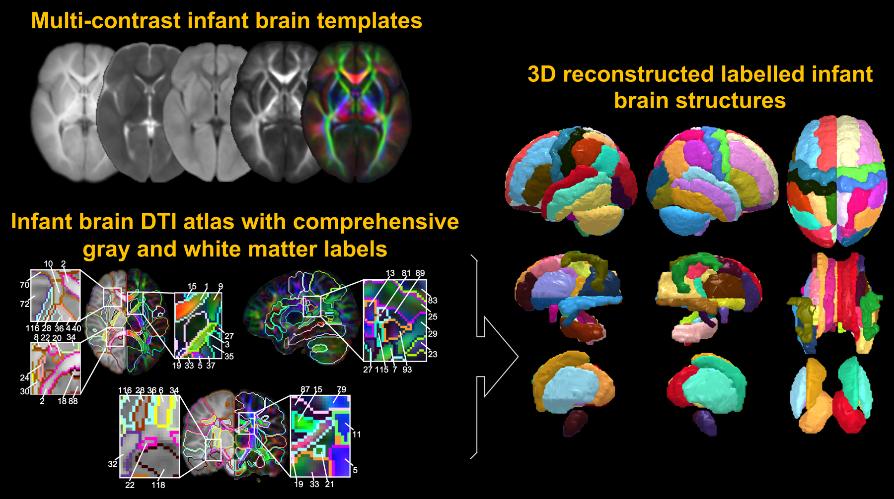

Details of the Data
The Penn-CHOP age-specific infant atlas package includes the following volume images for human infant brains aged 1 and 2 years: atlas labels, diffusion tensor imaging (DTI) fractional anisotropy (FA) map, average of b0 maps, average of diffusion weighted images (aDWI), DTI orientation-encoded colormaps (OEC), and co-registered structural T1-weighted (T1w) map. For both single-subject and population-averaged data, DTI FA, b0, aDWI, OEC maps and T1w map are presented for each age group, except for atlas labels.
The atlas labels for each year are based on the single-subject template structural images. All maps and atlas labels are in the template space and have the same dimensions and resolution. More details about the establishment of the Penn-CHOP age-specific infant atlas can be found in the publication referenced below.
Image dimension of T1w, DTI maps and atlas labels of both ages: 180x220x180
Resolution: 1x1x1 mm3
Registration is required for downloading the dataset.
Publication
Song L, Peng Y, Ouyang M, Peng Q, Feng L, Sotardi S, Yu Q, Kang H, Sindabizera KL, Liu S, Huang H, 2024. Diffusion-tensor-imaging 1-year-old and 2-year-old infant brain atlases with comprehensive gray and white matter labels.
Human Brain Mapping 45(7): e26695
[Pubmed]
License
Copyright (C) Department of Radiology, Children's Hospital of Philadelphia,
and Department of Radiology, Perelman School of Medicine, University of Pennsylvania, PA, USA.
All rights reserved.
“Penn-CHOP age-specific infant atlas package” is a free atlas package. “Penn-CHOP age-specific infant atlas package” is distributed in the hope that it will be useful, but without any warranty; without even the implied warranty of merchantability or fitness for a particular purpose.
“Penn-CHOP age-specific infant atlas package” should only be used for scientific purposes. It CAN NOT be used for commercial purposes. It SHOULD NOT be used for medical purposes. The authors WILL NOT be responsible for using it in medical conditions.
Acknowledgement
This study is sponsored by National Institutes of Health (NIH R01MH092535, R01MH125333, R01EB031284, R01MH129981, R21MH123930, UM1MH130991, and P50HD105354); Natural Science Foundation of China (Grant Nos: 31571237 and 81671651 to S.L.); and Natural Science Foundation of Shandong Province (Grant No: ZR2020QH048 to L.S.).
Data Download
To download the data, please fill out this google form. Download link will be available after.